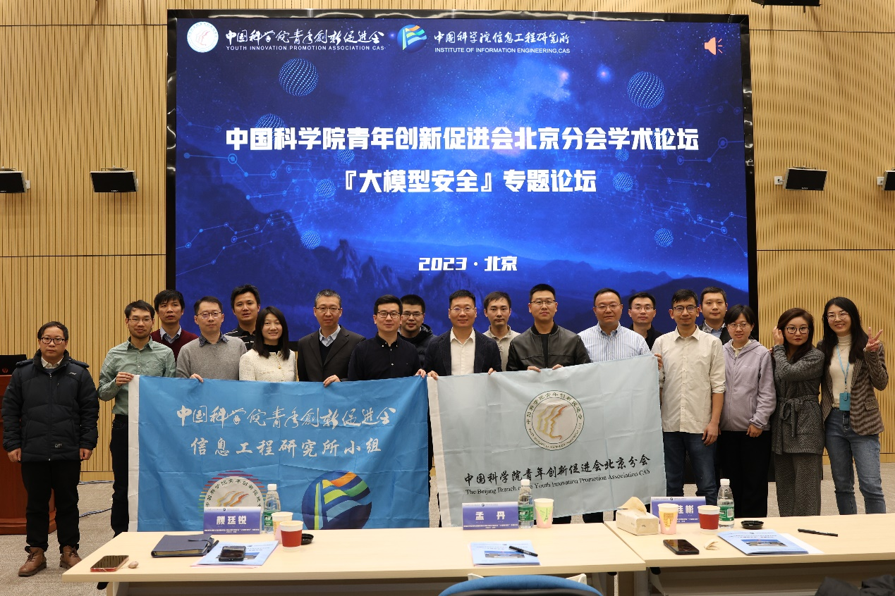
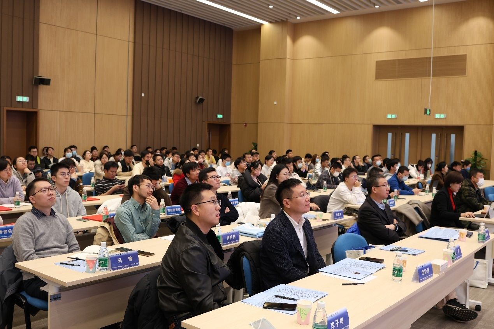

发布时间：2023年11月30日
11月30日，中国科学院青年创新促进会(以下简称“青促会”)北京分会学术论坛“大模型安全”专题论坛在中国科学院信息工程研究所成功举办。本次大会由青促会北京分会主办，信息工程研究所小组承办，计算技术研究所小组、自动化研究所小组协办。大会吸引来自中国科学院信息工程研究所、中国科学院计算技术研究所、中国科学院自动化研究所、中国科学院空天信息创新研究院、国家互联网应急中心、中电科网络空间安全研究院等科研机构，清华大学、中国人民大学、同济大学、浙江大学、广州大学、中国科学院大学、北京邮电大学、华北电力大学等高校，以及字节跳动、阿里巴巴、华泰证券、华为、微步等企业的知名专家及青年学者代表300余人到会参与交流，引发热烈讨论。


大会由信息工程研究所人力资源处处长颜廷锐主持，信息工程研究所所长孟丹、青促会理事长边桂彬、青促会北京分会会长李子申等领导出席本次会议。清华大学陶建华教授、同济大学王昊奋研究员、中国人民大学严睿副教授、中国科学院自动化研究所刘静研究员、浙江大学纪守领教授、广州大学齐佳音教授、字节跳动公司林泽韬博士带来学术报告。
大会伊始，边桂彬理事长做开幕致辞。他指出，青促会自2011年成立以来，致力于在学术交流、科技成果转化、科学传播等方面工作做出突破和进展，本次论坛举办于“大模型”爆火的一周年之际，着眼于学术界和工业界关注焦点的“大模型安全”问题，借此机会，促进各方合作与共赢，共同推动大模型安全领域的发展和进步。
大会期间，还举办了2022年度青促会会员证书授予仪式，青促会北京分会会长李子申为各位新会员颁发证书并讲话。
本次大会增进了各个研究所、高校及青促会会员之间的互相了解，为大模型安全领域的研究人员以及企业界代表提供了学术探讨和交流的平台，进一步提升了青年人才之间的思想碰撞和学术交叉融合，开拓了参会者的科研思路，启发了广大参会人员在大模型安全领域的创新意识。